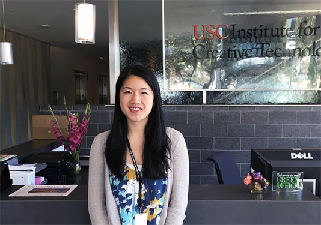
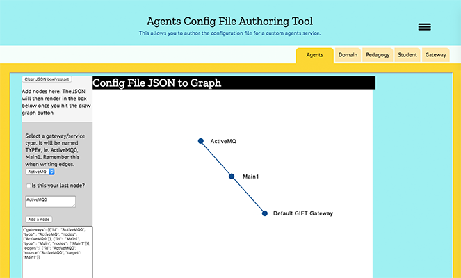
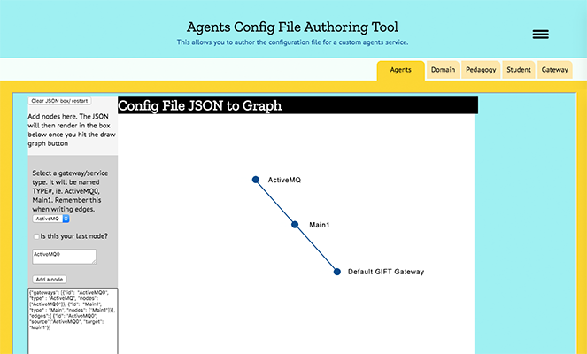

Visiting Research Assistant
USC Institute of Creative Technologies
Summer 2017

Purpose
For the latter half of the summer of 2017 (after I worked in Peru), I conducted research for USC, primarily doing programming tasks on an open-source Army Research Lab project called GIFT. The idea behind GIFT was to create an intelligent tutoring system to streamline army training. My contributions included developing atop the system's back-end controlled user interface and creating an interface to let users graph their gateways.
Process
The beginning of my summer was spent learning how to inherit a huge code base and contribute on top of it. After I familiarized myself with the system, I began to learn how to add functionalities, make cosmetic changes, and propagate info back to the system to be logged.
I also came around to bettering my Javascript through this internship, because I developed a web tool to draw and visualize gateways as graphs. To build it, I worked with JSON, Sigma (a graphing library), and data structures such as heaps.
After adding nodes as they pleased, the users would generate a string of JSON that would be parsed by some functions I wrote. With the help of Sigma, a graph would pop up in the center layout.

 


Reflection
Thanks to this program, I became very adept with living in unfamiliar code. I also became more adept at back-end, learning how it can control front-end as I worked up and down the stack. Conceptually, I learned a bit about messaging concepts as well.
Best of all, I got to understand an institute that was as devoted to the arts as they were to the sciences. I would watch movies with my cohort that were rendered from technologies created at the Institute (i.e. Logan, Leon: the Professional--I don't know why they chose such graphic movies) and hear from luminaries in CG like Paul Debevec. I was amazed by my fellow researchers, who would work on evolutionary neural nets or study negotiation using virtual humans.
(As an aside, I was also ecstatic to explore one of the cultural capitals of the world, Los Angeles!)